Θα δημιουργήσουμε το index-page component, το οποίο είναι η αρχική σελίδα του e-shop. Το index-page component θα αποτελείται από άλλα πέντε components : navigation-bar, discount-carousel, products-carousel, shop-services και my-footer.
Δημιουργούμε το component index-page και το τοποθετούμε στο φάκελο components.
ng generate component index-page
shop-services.component.html : Αρχικά, εισάγουμε τα components navigation-bar, shop-services, my-footer στο template.
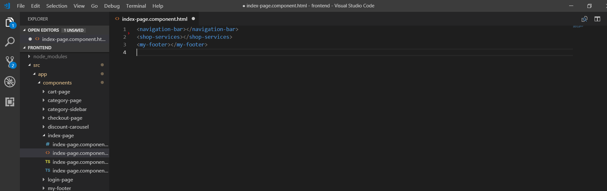Δημιουργούμε το component discount-carousel, το οποίο θα εμφανίζει τις προσφορές.
ng generate component discount-carousel
Επίσης, θα χρειαστούμε ένα service, το οποίο θα επικοινώνει με το server(Spring Boot). Θα το τοποθετήσουμε στο φάκελο services.
ng generate service deal
Η μέθοδος getDeals() του DealService πραγματοποιεί ένα HTTP GET στο http://localhost:8080/api/deals και παίρνει τις προσφορές.
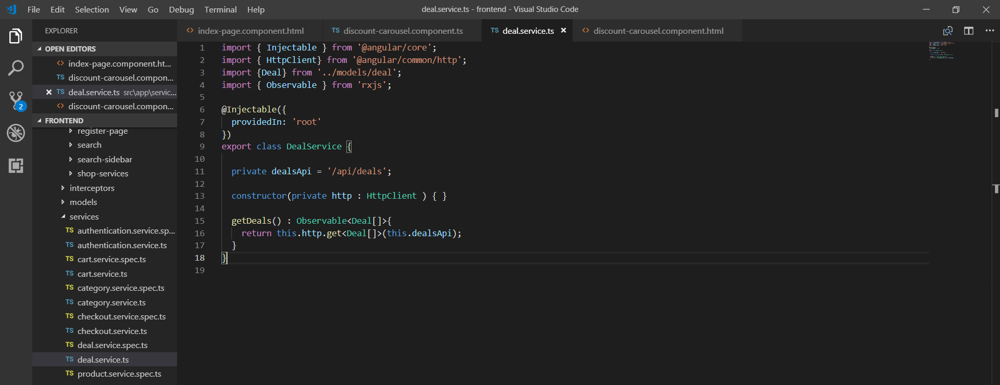Το Spring Boot επιστρέφει μια λίστα από Deals. Δημιουργούμε το αντίστοιχο μοντέλο Deal στο φάκελο models
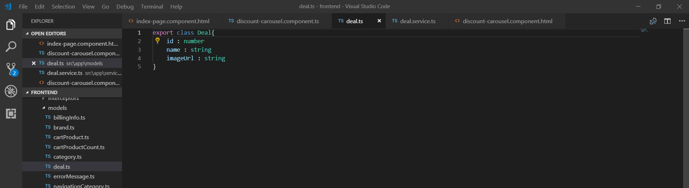Στην μέθοδο ngOnInit() του component, καλούμε την μέθοδο του service getDeals(), ώστε να πάρει τιμή η μεταβλητή deals
discount-carousel.component.ts
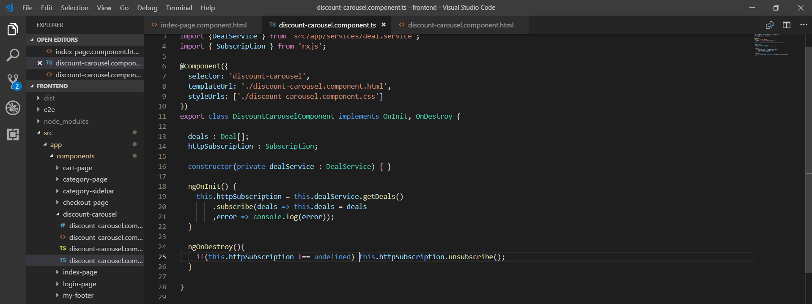Χρησιμοποιούμε το directive *ngFor, για να δημιουργήσουμε τα αντικείμενα του Bootstrap Carousel.
discount-carousel.component.html
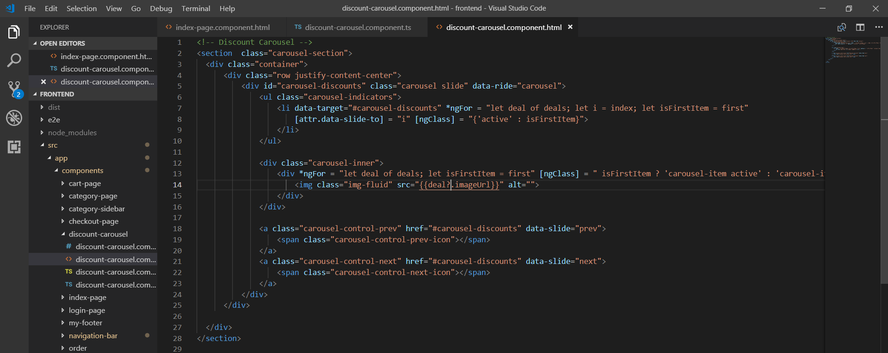Θα δημιουργήσουμε το product-carousel component, το οποίο θα εμφανίζει τα καινούρια και δημοφιλή προϊόντα, ανά τετράδες. Ο client θα πραγματοποιεί ένα HTTP GET αίτημα στο http://localhost:8080/api/products, μαζί με δύο παραμέτρους filter και page.
Spring Boot
Προσθέτουμε τρία fields smallImageUrl, largeImageUrl και verySmallImageUrl στο entity Product.java, που είναι τα URLs των τριών μεγεθών της εικόνας. Χρησιμοποιούμε το annotation @Transient, για να δηλώσουμε ότι δεν θέλουμε, να αποθηκευτούν στη βάση, αλλά θέλουμε να επιστρέφονται στην JSON απάντηση.
@Transient
private String smallImageUrl;
@Transient
private String largeImageUrl;
@Transient
private String verySmallImageUrl;
Δημιουργούμε τις κατάλληλες μεθόδους στο Spring Boot
ProductRepository
package springeshop.repositories;
@Repository
public interface ProductRepository extends JpaRepository<Product, Integer> {
Product findByid(int id);
Product findByName(String name);
@Query("select prod from Product prod where prod.is_favorite = true")
Page<Product> findFavoriteProducts(Pageable pageable);
@Query("select prod from Product prod where prod.is_new = true")
Page<Product> findNewProducts(Pageable pageable);
}
ProductService
package springeshop.service;
public interface ProductService{
Product findById(int id);
Product findByName(String name);
void saveProduct(Product product);
void updateProduct(Product product);
void deleteProductById(int id);
boolean doesProductExist(Product product);
Page<Product> findFavoriteProducts(Pageable pageable);
Page<Product> findNewProducts(Pageable pageable);
}
ProductServiceImpl
Προσθέτουμε τις δύο μεθόδους
@Override
public Page findFavoriteProducts(Pageable pageable) {
return productRepository.findFavoriteProducts(pageable);
}
@Override
public Page findNewProducts(Pageable pageable) {
return productRepository.findNewProducts(pageable);
}
ProductApiController
Προσθέτουμε τις ακόλουθες μεθόδους. Όταν η παράμετρος filter εχει τιμή "favorite", επιστρέφουμε τα προϊόντα με is_favorite = true, ενώ όταν έχει τιμή "new", επιστρέφομε τα προϊόντα με is_new = true.
@RequestMapping(value = "/products", method = RequestMethod.GET)
public ResponseEntity<?> getProductsByFilter(@RequestParam(value = "filter") String filter, @RequestParam(value = "page") int page){
if(filter.equals("favorite")){
Page<Product> favoriteProducts = productService.findFavoriteProducts(PageRequest.of(page, 4));
if(favoriteProducts.getTotalElements() == 0){
return new ResponseEntity<>(HttpStatus.NO_CONTENT);
{
addImagesAndQuantityToProducts(favoriteProducts);
return new ResponseEntity<Page<Product>>(favoriteProducts, HttpStatus.NO_CONTENT);
else if(filter.equals("new")){
Page<Product> newProducts = productService.findNewProducts(PageRequest.of(page, 4));
if(newProducts.getTotalElements() == 0){
return new ResponseEntity<Page<Product>>(HttpStatus.NO_CONTENT);
{
addImagesAndQuantityToProducts(newProducts);
return new ResponseEntity<Page<Product>>(newProducts, HttpStatus.NO_CONTENT);
}
private void addImagesAndQuantityToProducts(Page<Product> products){
for(Product product : products){
ProductImage productImage = productImageService.findByProductId(product.getId());
product.setSmallImageUrl(productImage.getSmallImageurl());
product.setLargeImageUrl(productImage.getLargeImageurl());
product.setVerySmallImageUrl(productImage.getVerySmallImageurl());
int productQuantity = inventoryService.findProductQuantity(product.getId());
product.setQuantity(productQuantity);
}
Παράδειγμα αιτήματος με Postman
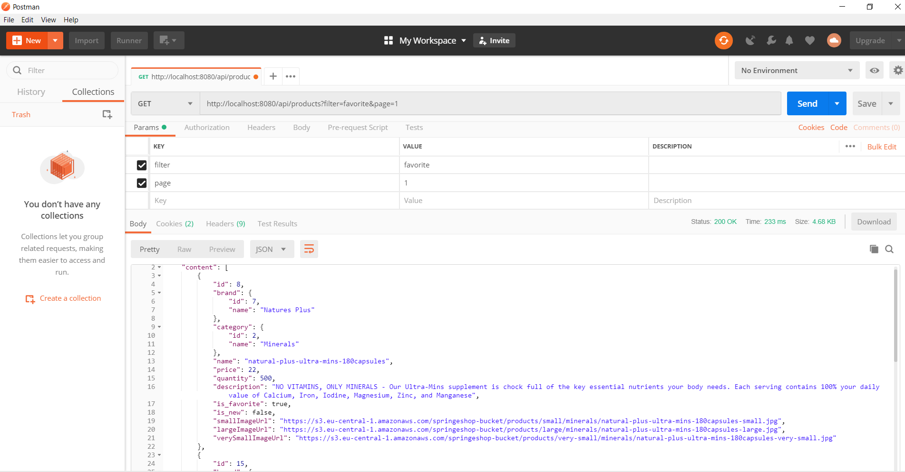Angular
Δημιουργούμε πρώτα το products-service, το οποίο περιέχει τις μεθοδους getFavoriteProducts() και getNewProducts(), για να παίρνουμε τα αγαπημένα και καινούρια προϊόντα.
ng generate service products
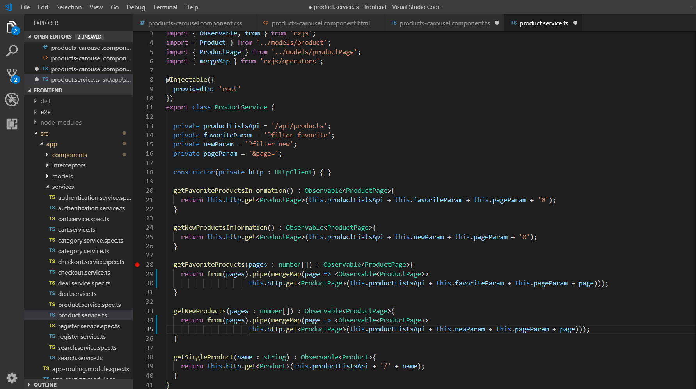
Δημιουργούμε το products-carousel component
ng generate component products-carousel
Θα δημιουργήσουμε δύο φορές το product-carousel component: μια για να εμφανίζουμε τα αγαπημένα και μια για να εμφανίζουμε τα καινούρια. Θα δίνουμε τιμή στο carouselType property από το IndexComponent. Αν το carouselType πάρει τιμη 'favorite', θα το component θα ζητάει τα αγαπημένα, ενώ αν είναι 'new' θα ζητάει τα καινούρια.
products-carousel.component.ts
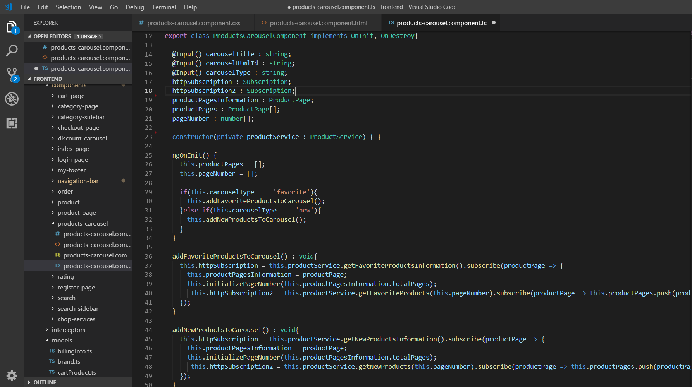Χρησιμοποιούμε το directive *ngFor, για να δημιουργήσουμε τα αντικείμενα του Bootstrap Carousel.
products-carousel.component.html
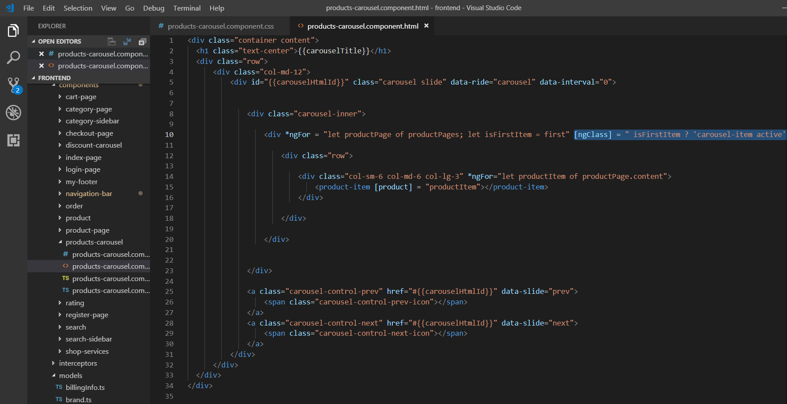products-carousel.component.css
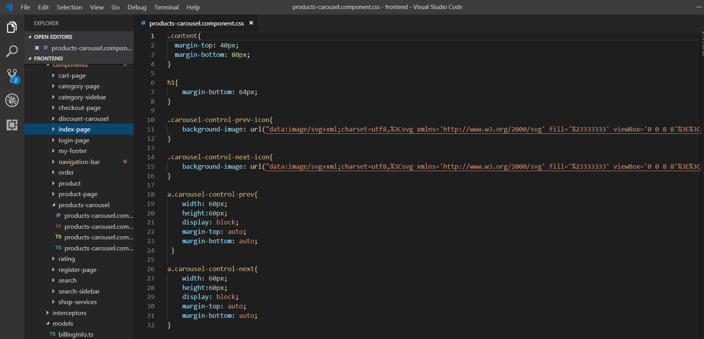Τελικό index-page.component.html
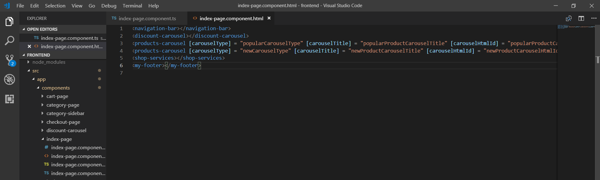Τελικό index-page.component.ts
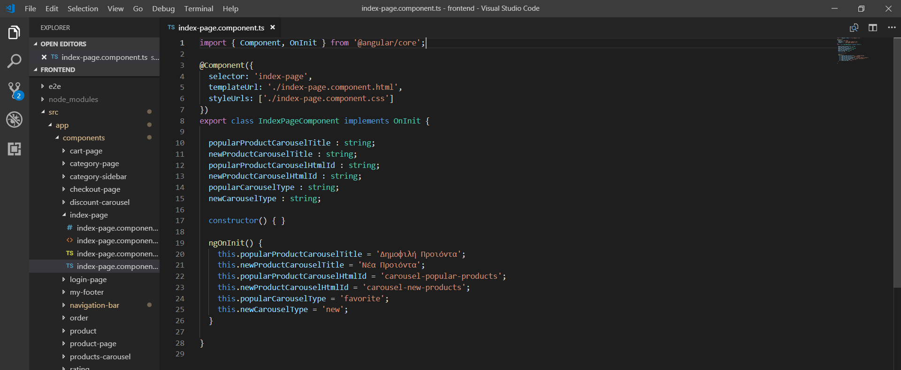Πάνω μέρος (navigation-bar + discount-carousel components)
Μεσαίο μέρος (products-carousel + products-carousel components)
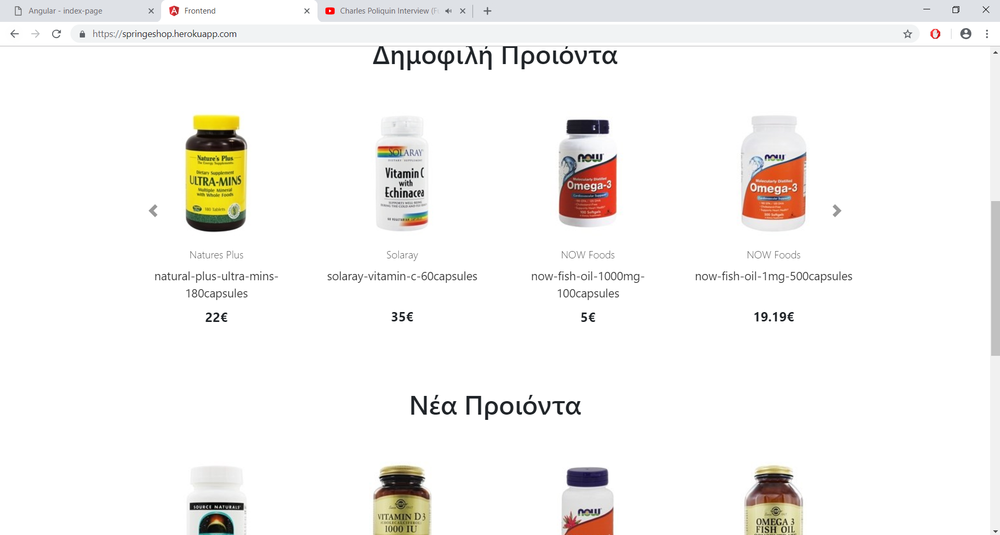Κάτω μέρος (shop-services + my-footer components)
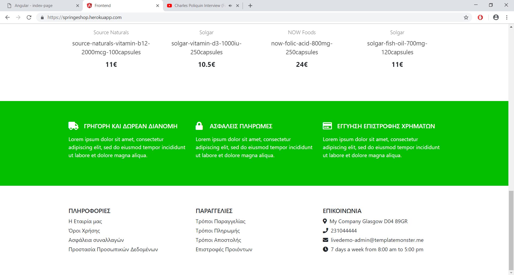